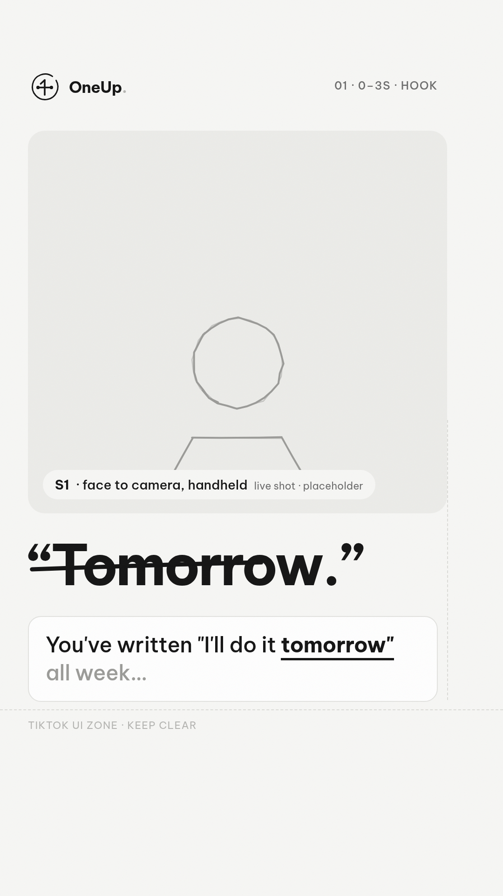
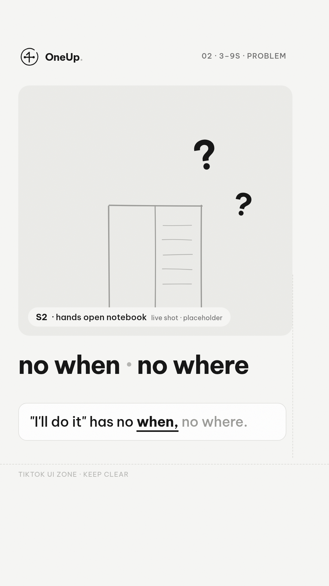
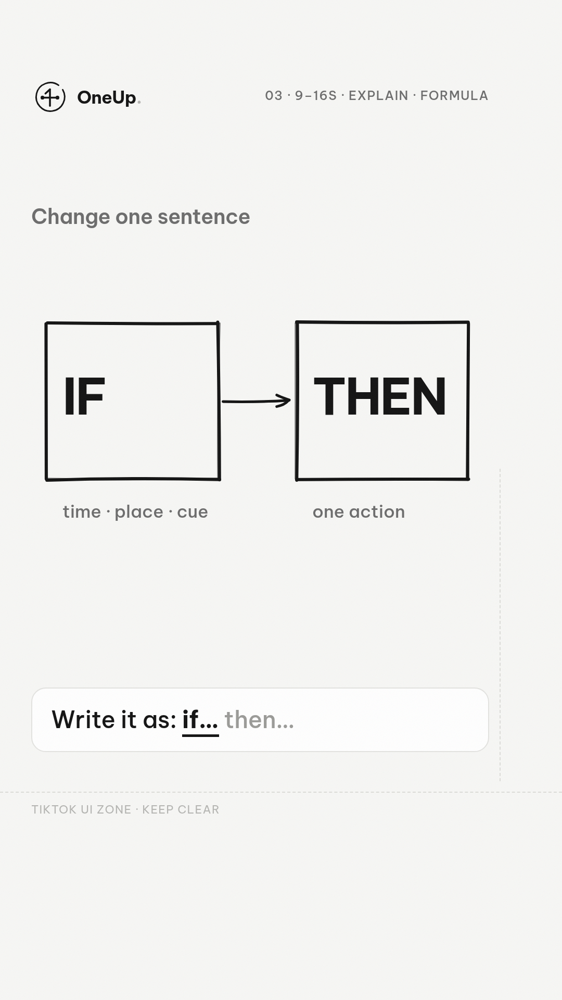
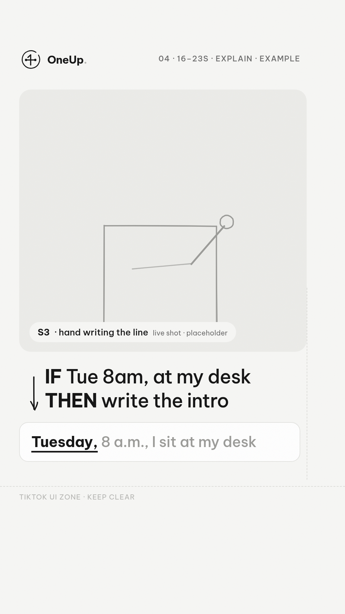
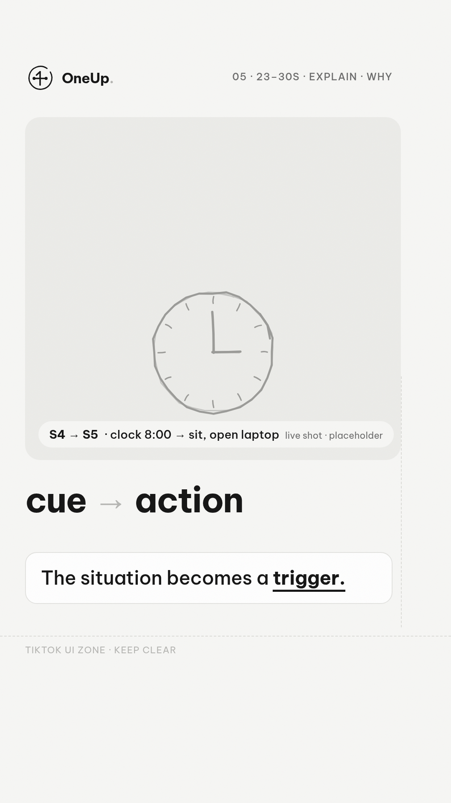
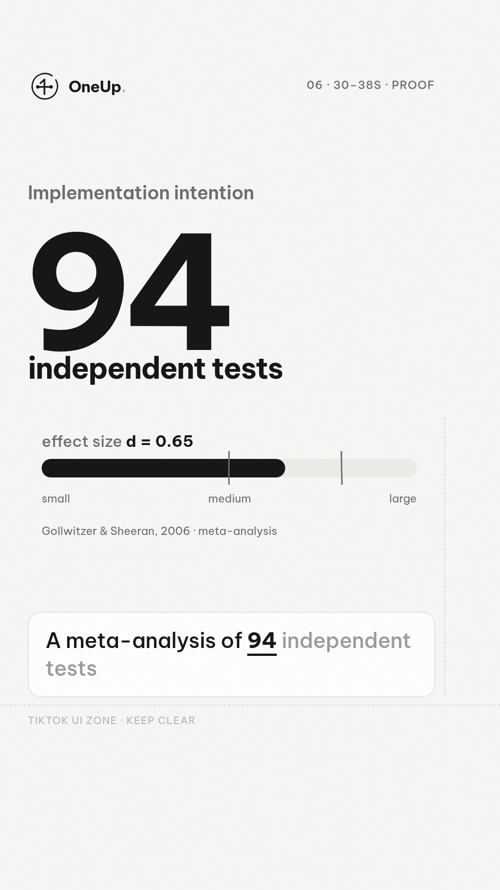
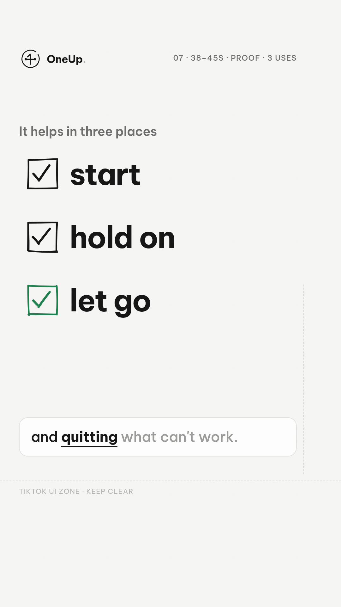
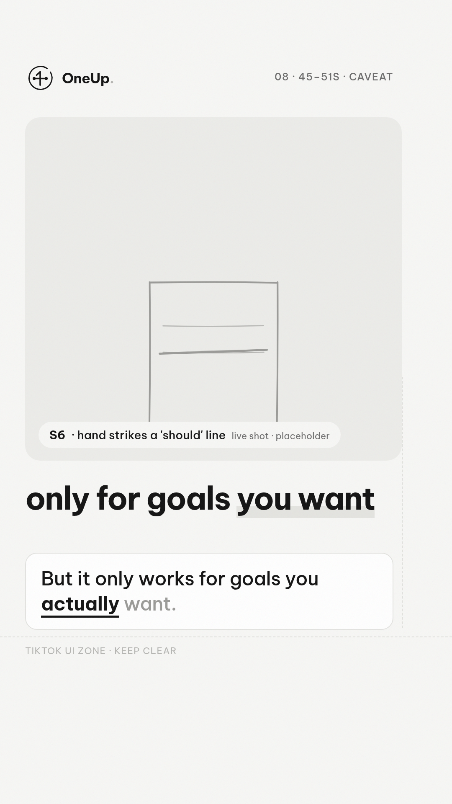
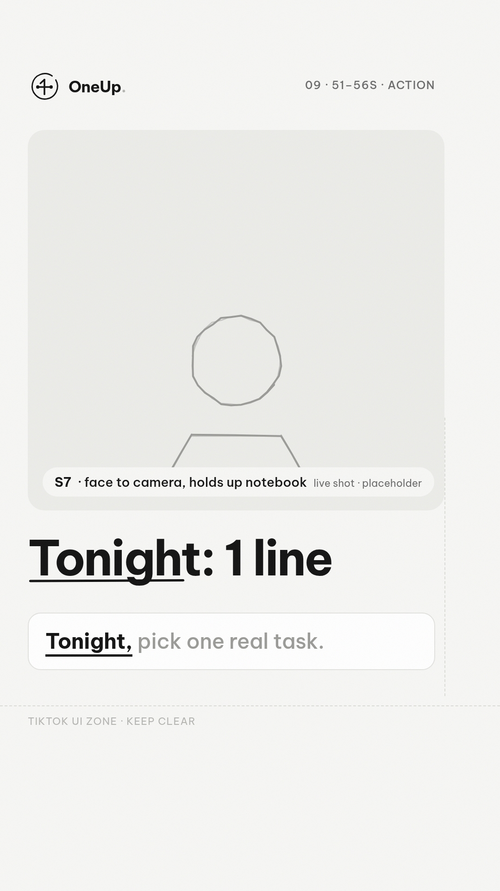
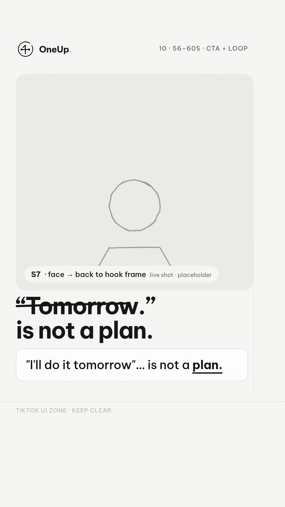

Bạn viết "mai mình làm" cả tuần rồi… mà vẫn chưa bắt đầu.

Không phải bạn lười. Câu "mình sẽ làm" không nói lúc nào, ở đâu.

Đổi đúng một câu. Viết theo kiểu: nếu… thì…

Ví dụ: "Thứ Ba, tám giờ sáng, ngồi vào bàn, thì viết phần mở đầu trước."

Tình huống đó trở thành cái công tắc. Đến giờ, ngồi vào bàn, là việc tự bắt đầu.

Một nghiên cứu gộp 94 kiểm nghiệm độc lập… hiệu ứng mức trung bình đến lớn.

Nó giúp ở ba chỗ: bắt đầu làm, giữ được khi bị cắt ngang, và dừng đúng lúc.

Nhưng nó chỉ hiệu quả với việc bạn thật sự muốn làm.

Tối nay, chọn một việc thật. Viết một câu "nếu… thì…". Mất một, hai phút.

Viết câu của bạn xuống comment. Vì "mai mình làm"… không phải là một kế hoạch.